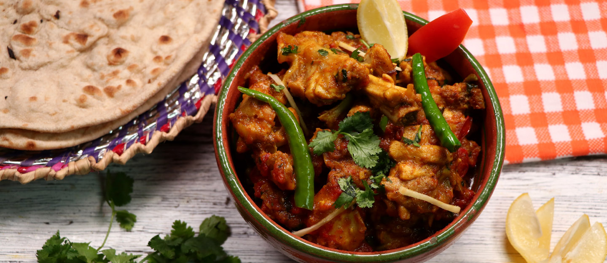
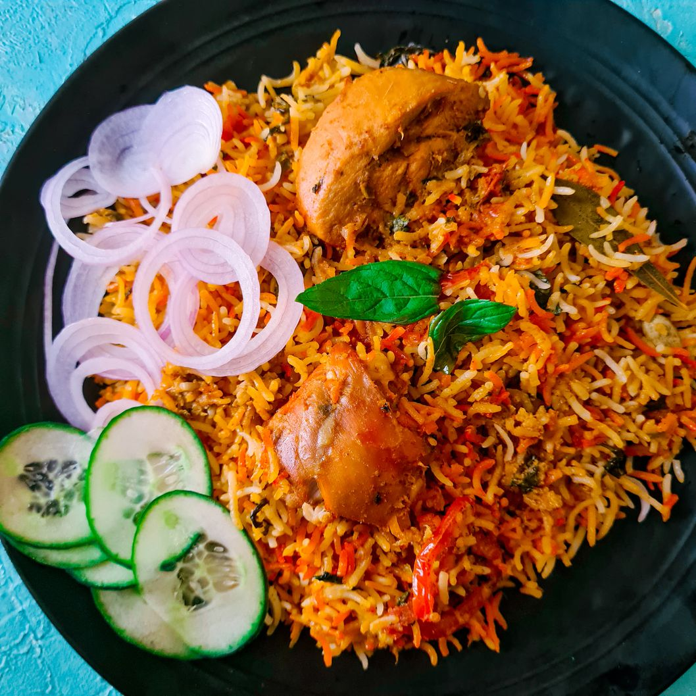

Food 1
Nihari is a rich and flavorful slow-cooked stew. Served with naan or paratha, especially enjoyed as a hearty breakfast in Pakistan and India.

Food 2
Karahi is a popular South Asian dish cooked in a deep, wok-like pan called a "karahi." It features tender chicken, mutton, or beef stir-fried

Food 3
Biryani is a fragrant and colorful rice dish layered with spiced meat, vegetables, or seafood.